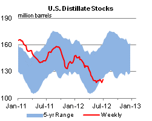

Released: July 11, 2012
Next Release: July 18, 2012
Brent Crude Oil Spot Price Added to Short-Term Energy Outlook
Since the mid-1980s, benchmark crude oil prices such as West Texas Intermediate (WTI) in the United States and Brent crude oil in Europe have served as reference points that the market uses for pricing other crude oils. Since late 2010, however, WTI has been selling at a large discount to Brent, and has become less useful as an indicator for U.S. petroleum product prices. Beginning with the July 2012 Short-Term Energy Outlook (STEO), the U.S. Energy Information Administration (EIA) will supplement its traditional WTI and average refiner acquisition cost (RAC) forecasts with a forecast of the Brent crude oil spot price that will directly enter into price forecasts for gasoline and other refined products in the STEO (see Brent Crude Oil Spot Price Added to Forecast). EIA currently expects the Brent crude oil price will average $99 per barrel over the second half of 2012 and $98 per barrel in 2013.
Until 2008, all North American crude oil grades broadly tracked fluctuations in the WTI price and were clustered within about $8 per barrel of the WTI spot price (Today in Energy, June 21, 2012). Pricing differences between crude oil grades were explained largely by the different quality characteristics of the crude oil in each location and relative transportation costs. Between January 2004 and late 2010, WTI consistently sold at about a $1 to $2 premium to Brent as the two crude oil prices closely tracked each other (Figure 1).
{kind=link}
Starting in late 2010, WTI began to sell at a discount to Brent due to rapid increases in crude oil production from tight oil formations (This Week In Petroleum, March 14, 2012), primarily from the Bakken formation in North Dakota and the Eagle Ford shale in Texas, which led to transportation bottlenecks in and around the Cushing, Oklahoma storage hub where WTI oil is traded (This Week In Petroleum, May 16, 2012). In addition, Brent prices were being positively impacted by supply disruptions in the waterborne light-sweet crude oil markets (e.g., outages in Libya, Nigeria). The WTI discount to Brent continued to widen in 2011, reaching a monthly average high of about $27 per barrel in September 2011, before falling back to around $13 per barrel in June 2012. With limited pipeline capacity, the additional crude oil volumes have been moved out of the region by rail and to a lesser extent by truck. The $6 to $12 per barrel cost of transportation by rail and truck has been cited by some analysts as a floor for the Brent-WTI spread.
With the large gap between Brent and WTI prices, WTI is no longer representative of the marginal crude oil price driving petroleum product prices in the U.S. market. A comparison of Reformulated Gasoline Blendstock for Oxygenate Blending (RBOB) spot prices -- which represent wholesale gasoline prices -- to the Brent, WTI, and RAC crude oil prices in the largest U.S. refining region, the Gulf Coast, illustrates the growing disconnect of gasoline prices from both WTI and RAC prices since late 2010 (Figure 2). The spreads between Gulf Coast RBOB and the Brent, WTI, and RAC crude oil prices tracked each other closely, averaging 27 cents per gallon from 2006 through 2010. Since the end of 2010, only Brent has held near its historical average spread, averaging 18 cents per gallon, while the WTI and RAC spreads have averaged 57 cents per gallon and 42 cents per gallon, respectively. Thus, Brent has become more representative of the marginal cost of crude oil for the majority of refiners in the Atlantic Basin. In the Rocky Mountain region and the Midwest, discounted inland crudes are widely used by refiners. However, because Midwest product markets also rely on products produced outside of that region, product prices still reflect the price of waterborne crudes that are best represented by the Brent benchmark.
{kind=link}
Gasoline and diesel fuel prices both increase after many weeks
The U.S. average retail price of regular gasoline increased six cents this week to $3.41 per gallon, 23 cents per gallon lower than last year at this time. This is the first increase in the U.S. average retail gasoline price since April 2, 2012. Prices decreased in the Rockies and west, while to the east they increased. The largest increase was in the Midwest, where the average price was up 12 cents to $3.44 per gallon. The East Coast price increased six cents from last week and is now $3.35 per gallon. The price on the Gulf Coast is $3.16 per gallon, up four cents from last week. Moving west, the Rocky Mountain average price decreased three cents to $3.55 per gallon, and the West Coast price is $3.67 per gallon, down four cents from last week.
The national average diesel fuel price increased four cents to $3.68 per gallon, 22 cents per gallon lower than last year at this time. Prices increased in all regions of the Nation except the Rocky Mountains, where the price decreased three cents to $3.68 per gallon. The largest increase was in the Midwest, where the price increased six cents to $3.64 per gallon. On the Gulf Coast the price increased 4 cents to $3.61 per gallon. The East Coast price is $3.73 per gallon, an increase of three cents from last week. Rounding out the regions, the West Coast price increased a penny to $3.80 per gallon.
Propane stocks build again
Last week, total U.S. propane inventories continued their seasonal growth, adding 1.0 million barrels of new stocks to end at 63.2 million barrels, 18.6 million barrels (42 percent) higher than a year ago. Most of the build occurred in the Gulf Coast region, which added 0.8 million barrels of propane inventory. The Midwest and East Coast regions grew by 0.2 and 0.1 million barrels respectively, and Rocky Mountain/West Coast stocks dropped 0.2 million barrels. Propylene non-fuel-use inventories represented 6.6 percent of total propane inventories.
Text from the previous editions of This Week In Petroleum is accessible through a link at the top right-hand corner of this page.
| Retail Data | Change From Last | Retail Data | Change From Last | ||||
| 07/09/12 | Week | Year | 07/09/12 | Week | Year | ||
| Gasoline | 3.411 | Diesel Fuel | 3.683 | ||||
|
 |
||||||||||||||||||||||||||
| *Note: Crude Oil Price in Dollars per Barrel. | |||||||||||||||||||||||||||
|  | |||||||
| Stocks Data | Change From Last | Stocks Data | Change From Last | ||||
| 07/06/12 | Week | Year | 07/06/12 | Week | Year | ||
| Crude Oil | 378.2 | Distillate | 120.9 | ||||
| Gasoline | 207.7 | Propane | 63.183 | ||||